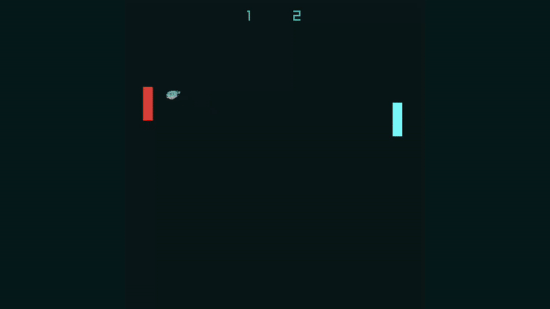

PufferLib 2.0: Reinforcement Learning at 1,000,000 Steps/Second
Welcome to a new age of reinforcement learning. This is our biggest release ever. 11 new environments totaling ~20,000 lines of pure C. They all run >1M steps/second (sps) on a single CPU core, and you can train at 300k-1.2M sps on a single GPU, depending on the environment and policy. That means you can run centuries of simulations per GPU per day. Academic labs with a handful of GPUs now effectively have thousands. It's all free and open source under the MIT license -- star the repo to support the project!

About half of the new environment code was written by open-source contributors. Thank you all for making this possible. A full list is available on the project page.
Puffer Ocean: Our Environments
You can play these yourself or watch our pretrained agents running live in your browser. Each of our new environments are written in C as a single .h file. There is nothing fancy here, and the only dependency is raylib for rendering. Anyone who has taken a single systems course can understand and contribute to the code. The main techniques we use for performance are:
- No dynamic memory allocations. Everything is allocated during initialization.
- No observation copies. Environments write observations directly to the buffers used for training.
- Aggressive caching. The most extreme example of this is in the MOBA, where we store 250MB of pathing data.
We bind environments to Python via a short Cython intermediary layer. Each environment also has a Python stub defining observation and action spaces and wrapping the Cython step/reset/close functions. This means that environment devs more comfortable in Python can prototype there before porting to Cython or C for performance. Cython is plenty fast, but C makes it easy to compile for web. We load PyTorch models with a ~500 line puffernet.h to demo trained agents in your browser.
Native PufferEnv API + Vectorization
Even with a 1M sps environment, you still spend 15 minutes on simulation per billion steps trained. With PufferLib, it's more like 10 seconds because of asynchronous on-policy sampling. When your policy is computing actions for one batch of environments, another is stepping in the background. By the time your forward pass is done, new data is ready with 0 downtime. This is a fancy implementation of EnvPool with some extra tricks. It's compatible with everything, not just our native envs, but that's where you'll see the biggest benefit. Details are in the PufferLib whitepaper on arXiv.
To achieve this level of performance, we introduce a new PufferEnv API for native environments. It's less than 100 lines and allows new environments to take full advantage of the rest of PufferLib's optimizations. Native environments skip the Python loop over agents as well as several redundant copy operations. Our multiprocessing implementation checks if you are using a native environment and, if you are, it passes your constructor a pointer into shared memory. Each C environment then writes observations directly into that buffer, so they are immediately available on the main process.
In case you're worried about compatibility, don't be. Everything can still be run with Gymnasium/PettingZoo. We just use a VecEnv style API by default. Async mode is a superset of Gymnasium, so you can start off synchronous and implement async with a few small changes to your training code. And even if you don't do any of that, you will still be able to train an order of magnitude faster than with more standard environments.